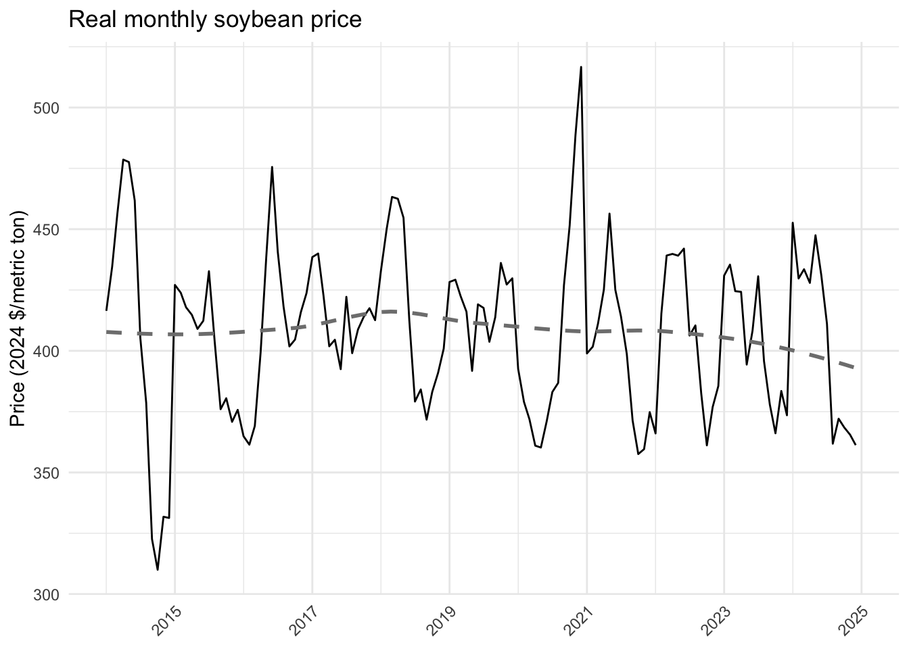
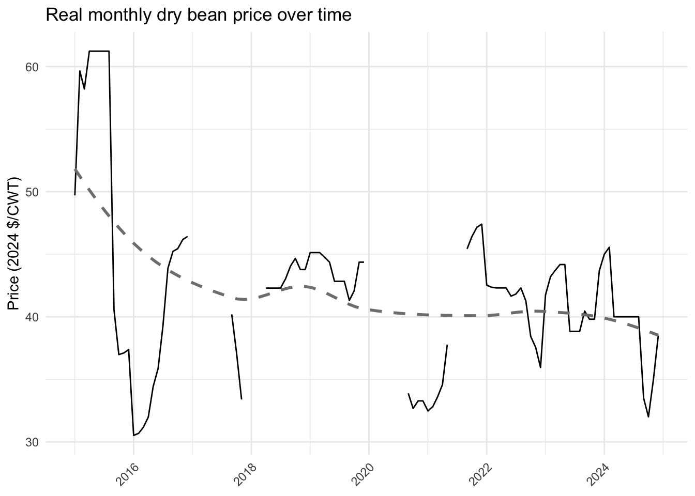
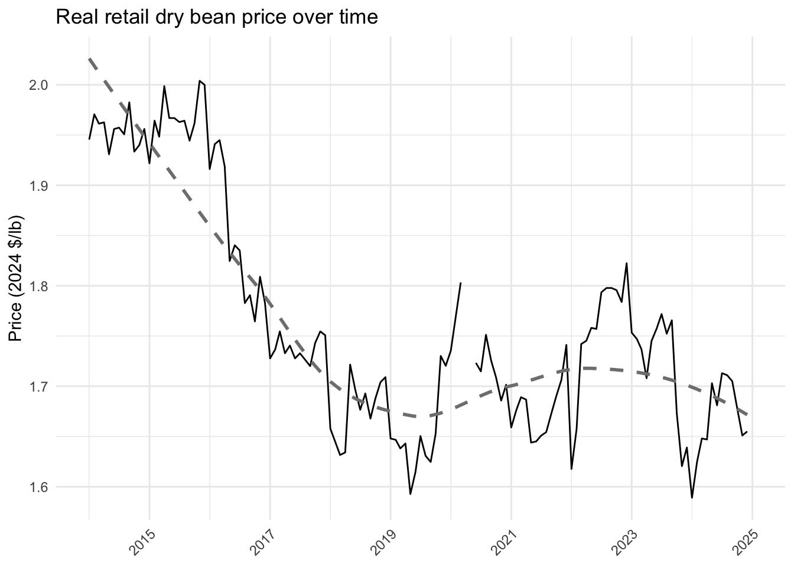

| Source | Supplier | Item | Unit | $/lb | Notes |
|---|---|---|---|---|---|
| conventional | 1 | Canned beans, Black | 12 × 15.5 oz | $1.67 | Range $1.58–$1.75 |
| conventional | 1 | Canned beans, Kidney | 12 × 15.5 oz | $1.61 | Range $1.58–$1.63 |
| organic | 2 | Dry Beans – Black | 15 × 1 lb | $2.96 | |
| organic | 3 | Dry Beans – Pinto | 15 × 1 lb | $2.80 | |
| conventional | 2 | Dry Beans – Light Red Kidney | 15 × 1 lb | $2.69 | |
| organic | 2 | Dry Beans – Light Red Kidney | 15 × 1 lb | $3.33 | |
| conventional | 4 | Dry Beans – Cranberry | 12 × 2 lb | $1.88 | |
| organic | 5 | Dry Beans – Black | 25 lb | $1.75 | Average 3 sources |
| organic | 5 | Dry Beans – Light Red Kidney | 25 lb | $2.16 | Average 3 sources |
| organic | 5 | Dry Beans – Pinto | 25 lb | $2.02 | Average 3 sources |
2 Data inputs
2.1 Pricing
Final data: Farmgate pricing for dry beans and soybeans and retail pricing for dry beans.
Prices come from a variety of sources. All are reported in 2024 dollars using the Producer Price Index (PPI) or the Consumer Price Index (CPI), depending on where they are located along the supply chain. For farmgate prices, we used the St. Louis Fed, Producer Price Index by Commodity for soybeans and dry beans.
2.1.1 Differentiated
We have limited data on prices for differentiated beans. Rather than providing a time series of prices, we provide and average and standard deviation of prices. All data is based on interviews and pricing documents.
2.1.1.1 Wholesale/distributor
We reviewed the product lists of seven distributors who were identified as carriers of local and regional products who also carry dried or canned beans, and who distribute into New York City and the Hudson Valley. These are reported in
2.1.1.2 Secondary processor
Data on secondary processors comes from pricing sheets and interviews. Data is based on frozen black bean patties.
Organic: 5 oz patty, 24 patties/case, $51 per case. Conventional: 3.30/lb
We don’t have variation, so we rely on the variation we saw for wholesalers by taking cv = sd / mean and using that ratio to estimate a standard deviation.
2.1.1.3 Farmer & Aggregator/cleaner
We use data from the interviews to understand differentiated prices.
Breakdown on a 50lb bag: Grower receives $52; Cleaner $5; $57 price out the door. We do not have variation, so we assume a similar variation as is seen in the wholesale data for differentiated beans.
All data was provided in 2023, we convert all prices to be in 2024 dollars, using the
| Type | Organic | Supply chain location | Form | Mean ($/lb) | SD ($/lb) | Mean ($/kg) | SD ($/kg) |
|---|---|---|---|---|---|---|---|
| differentiated | conventional | farmgate | dried | 1.04 | 0.14 | 2.29 | 0.32 |
| differentiated | conventional | aggregator/cleaner | dried | 1.14 | 0.16 | 2.51 | 0.35 |
| differentiated | organic | farmgate | dried | 2.08 | 0.51 | 4.59 | 1.13 |
| differentiated | organic | aggregator/cleaner | dried | 2.28 | 0.56 | 5.03 | 1.24 |
| differentiated | conventional | primary_processor | dried | ||||
| differentiated | conventional | primary_processor | canned | ||||
| differentiated | conventional | primary_processor | frozen | ||||
| differentiated | conventional | secondary_processor | dried | ||||
| differentiated | conventional | secondary_processor | canned | ||||
| differentiated | conventional | secondary_processor | frozen | 3.3 | 0.81 | 7.28 | 1.79 |
| differentiated | conventional | wholesaler/distributor | dried | 2.29 | 0.57 | 5.04 | 1.26 |
| differentiated | conventional | wholesaler/distributor | canned | 1.64 | 0.04 | 3.62 | 0.09 |
| differentiated | conventional | wholesaler/distributor | frozen | ||||
| differentiated | organic | primary_processor | dried | ||||
| differentiated | organic | primary_processor | canned | ||||
| differentiated | organic | primary_processor | frozen | ||||
| differentiated | organic | secondary_processor | dried | ||||
| differentiated | organic | secondary_processor | canned | ||||
| differentiated | organic | secondary_processor | frozen | 6.8 | 0.94 | 14.99 | 2.07 |
| differentiated | organic | wholesaler/distributor | dried | 2.5 | 0.62 | 5.52 | 1.36 |
| differentiated | organic | wholesaler/distributor | canned | ||||
| differentiated | organic | wholesaler/distributor | frozen |
2.1.2 Commodity
Here we focus on price data for the last 10 years, where available. All prices are reported in 2024 dollars.
2.1.2.1 Farmgate
For soybeans, we use the global price of soybeans from the Federal Reserve Bank of St. Louis(“PSOYBUSDM.csv”) for monthly price data. Units are reported as U.S. dollars per metric ton and are not seasonally adjusted. Value represents the benchmark prices which are representative of the global market. They are determined by the largest exporter of a given commodity. Prices are period averages in nominal U.S. dollars. Citation: International Monetary Fund, Global price of Soybeans [PSOYBUSDM], retrieved from FRED, Federal Reserve Bank of St. Louis; https://fred.stlouisfed.org/series/PSOYBUSDM, 2026.
2.1.2.1.1 PPI
We use the producer price index by commodity: Farm products: Soybeans(“WPU01830131.csv”) to put all soybean price data in 2024 dollars. Citation: U.S. Bureau of Labor Statistics, Producer Price Index by Commodity: Farm Products: Soybeans [WPU01830131], retrieved from FRED, Federal Reserve Bank of St. Louis; https://fred.stlouisfed.org/series/WPU01830131, 2026.
We use the producer price index by commodity: Farm products: drybeans(“WPU0113011.csv”) to put all dry bean price data in 2024 dollars.
We compute an average yearly PPI and then use that to convert all dollars into 2024 dollars. We keep data starting in 2014 for soybeans. For dry bean data, we do not have information prior to 2015.
2.1.2.1.2 Soybeans
2.1.2.1.3 Drybeans
We do not have the same price series for the global price of drybeans (as we did for soybeans).
We utilize the USDA AMS Bean Market News Summary (Annual) from 2024, 2019, and 2018. All data are reported as pdfs, not in spreadsheet format.
We convert to 2024 prices using the producer price index by commodity: Farm products: drybeans(“WPU0113011.csv”).
The first full year of data available is 2015.
Data are reported for some of the larger bean producing states/groups of states. New York is not one that is reported. We rely on Michigan as they are often reported as having a similar growing climate for drybeans.
We use Grower Monthly Average Price Per Cwt By Crop Year Fob, Michigan. I copy and paste the tables of interest into ClaudeAI and copies the code that coverts the table in a data frame.
2.1.2.1.4 Figures


2.1.2.1.5 Organic
We use data from The Risk Management Agency (RMA) on approved the 2023 CY projected prices shown below for the following plans of insurance: Yield Protection, Revenue Protection, and Revenue Protection with Harvest Price Exclusion.
The projected price per pound for drybeans is double for organic compared to conventional. We double all conventional prices.
For soybeans, we use Price discoverty data from the RMA.
2.1.2.2 Retail (consumer price)
Average Price: Beans, Dried, Any Type, All Sizes (Cost per Pound/453.6 Grams) in U.S. City Average(“APU0000714233.csv”). Includes all dried organic and non-organic beans, regardless of package size.
Average consumer prices are calculated for household fuel, motor fuel, and food items from prices collected for the Consumer Price Index (CPI). Average prices are best used to measure the price level in a particular month, not to measure price change over time. It is more appropriate to use CPI index values for the particular item categories to measure price change. Prices, except for electricity, are collected monthly by BLS representatives in the 75 urban areas priced for the CPI.
We report all prices in 2024 dollars using the Federal Reserve of St. Louis Consumer Price Index for All Urban Consumers: All Items in U.S. City Average (“CPIAUCSL.csv”)
2.1.2.2.1 CPI
2.1.2.2.2 Drybeans
2.1.2.2.3 Figures

| Year | Nominal ($/lb) | Real (2024 $/lb) | Real (2024 $/kg) |
|---|---|---|---|
| 2014 | 1.474 | 1.954 | 4.308 |
| 2015 | 1.486 | 1.967 | 4.336 |
| 2016 | 1.412 | 1.846 | 4.069 |
| 2017 | 1.358 | 1.737 | 3.830 |
| 2018 | 1.342 | 1.677 | 3.697 |
| 2019 | 1.344 | 1.649 | 3.636 |
| 2020 | 1.429 | 1.732 | 3.818 |
| 2021 | 1.448 | 1.676 | 3.696 |
| 2022 | 1.638 | 1.756 | 3.871 |
| 2023 | 1.673 | 1.722 | 3.797 |
| 2024 | 1.667 | 1.667 | 3.675 |
2.1.2.3 Final table
For the model, we include one worksheet with differentiated prices, one with commodity dry bean and soybean farmgate prices, and one with retail bean prices. These prices are an average of the prices from 2022-2024. All prices are in 2024 dollars.
| Dry bean conv. (2024 $/kg) | Dry bean org. (2024 $/kg) | Soybean conv. (2024 $/kg) | Soybean org. (2024 $/kg) |
|---|---|---|---|
| 0.893 | 1.785 | 0.405 | 0.81 |
| Retail dry bean (2024 $/kg) |
|---|
| 3.781 |
2.1.3 Margins
Final data: Estimated margins by location along the dry bean supply chain.
Data includes margins along the dry bean supply chain, presented as a range from high to low. Data are separated by organic/conventional and by different types processes (e.g., canned/bagged, wholesale margin for dried/canned beans), and by scale. In many cases the margins are the across different categories.
All data was gathered through interviews with supply chain actors. Note: A margin is the percentage of the selling price that is profit. Margin = (selling price - cost)/selling price.
2.2 Agricultural production
We estimate cost of production for dry bean and soybean producers using a combination of data sources including the restricted access Census of Agriculture, crop budgets from select states, and interview data. We get the number of farms and harvested acres by county for dry bean and soybean producers in New York using the public Census of Agriculture data.
2.2.1 Cost of production
Final data: Cost of production for dry beans and soybeans.
Using the restricted access data from the Census of Agriculture, we use the NASS defined variable, total expense, which includes all production expenses listed in the production expense section of the census and includes both fixed and variable expenses. Data are pulled for producers with dry bean sales. However, these data are at the whole farm level. We do not know the cost of production of beans specifically.
2.2.1.1 Dry beans
To understand cost of production for New York bean producers, we use data from interviews conducted of New York bean producers, which estimate a cost of production of $525 per acre.
We also need a cost of production for bean producers outside of New York, as those are the producers currently supplying the New York City beans. Based on discussions with Michael, most of the beans come from North Dakota, so we base our cost of production on an enterprise budget from North Dakota. We also include the other crop budgets we could find for comparison/to provide range:
- North Dakota, 2024
- Cost per acre: $434.05
- Wyoming
- Cost per acre: $598.70, cost per CWT $23.95
- Colorado
- Cost per acre: $454.57, cost per CWT $113.64
- Texas
- Cost per acre: $400
Conclusions We will use the estimated cost of production data for New York dry bean producers combined with Census of Agriculture data to estimate cost of production for different types of operations. For those outside of NY, we will provide a range based on the enterprise budgets we were able to find.
From the Census of Agriculture, we have an average dry bean yield in NY of 20.5 CWT per acre to convert to production cost per lb.
The New York cost of production per acre is based on June’s assumption.
We increase/decrease the average cost of production by scale and MWBE status based on U.S. data from the Census of Agriculture. We calculate the percent difference of each category from all producers to scale data. Data is not available for all categories in New York due to small sample sizes.
2.2.1.2 Soybeans
We use Census of Agriculture data and keep those producers where total sales is equivalent to soybean sales. Because we have soybean producers only, then the total cost per acre is for soybeans only and we don’t need to use a crop budget. We do pull crop budgets for reference.
In NY there are not enough farms in many categories. So we modify that NY data that we have up or down based on the national numbers. There are not enough organic soy producers in New York, so we assume the same difference between conventional and organic in New York as we see nationally.
If data are missing, that means there are no farms nationally in that category (i.e., only soybeans, organic, over $1M). We assume all organic production expenses are increased by the amount that organic is higher at the national level for all soybean only producers.
Crop budgets for comparison:
- Ohio in 2022
- Conventional: 761/acre.
- There is no data for organic until 2024, which is 946/acre. For comparison, conventional soy in 2024 was 754/acre.
- Louisiana in 2022
- 454/acre
- Alabama in 2025
- 471/acre
2.2.1.3 Save
Combine all data into one file and save. Final cost of production data
2.2.2 County production
Final data: Number of farms and acres of dry beans and soybeans in New York.
We use the number of farms and harvested acres by county for dry bean and soybean producers in New York to ensure our model has the correct number of farms and acres.
We download 2022 data from U.S. Department of Agriculture, National Agricultural Statistics Service (USDA NASS), Data, Large Datasets.
We keep state totals and county-level data for number of farms, acres harvested, and quantity harvested for drybeans (DRY EDIBLE BEANS, EXCLUDING CHICKPEAS AND LIMAS (CWT)) and soybeans (SOYBEANS FOR BEANS (BUSHELS)).
In counties where data is missing due to disclosure rules, we allocate remaining acres across those counties. After cleaning, if all rows are NA, then there are no farms in the county, if the number of farms is positive but NAs for the other columns then the data was not disclosed.
2.2.2.1 Import and clean
2.2.2.2 Allocate missing acres
Western counties have larger farms than other counties in NY. We take the average farm size in Western counties divided by the average size in other counties for each commodity and use the number of farms plus if located in a western county to allocate non-disclosed acres.
2.2.2.2.1 Drybeans
Western counties have larger farms than other counties in NY. We take the average farm size in Western counties divided by the average size in other counties. Dry bean farms are about 3 time larger in Western counties than in the rest of New York.
2.2.2.2.2 Soybeans
For soybeans, all non-disclosed farms are not located in the west. We allocate acres evenly assuming an average sized farm.
2.2.2.2.3 Proportion by group
Get the proportion of farms in each group so they can be allocated across counties, using data from the restricted access census.
2.2.2.3 Join and save
2.2.3 Differentiated market
Final data: Total demand for New York State differentiated dry beans.
To determine to total market for NYS differentiated beans, four dry bean growers with food grade cleaning capacity who sell directly to buyers were contacted (interviews, emails, phone calls). Sales data was provided by the producer. (Numbers were confirmed to make sure they are not double counted in the totals).
2.2.4 Farmer characteristics
We use data from the restricted access 2022 Census of Agriculture to paramertize agents in the model. Exported data and code used to generate results.
Sample includes farms in the Northeast that are (1) dry bean producers and (2) soybean producers that don’t produce dry beans and are not primary commodity livestock/dairy.
The sheet titled “summary” includes summary statistics (mean/standard error) for a variety of different farm-level characteristics separately for dry bean and soybean producers by scale, MWBE, and organic.
The sheet titled “summary_landuse_organic” includes summary statistics specifically related to land use for dry bean and soybean producers for those with organic sales and those without.
The sheet titled “metdata” contains definitions of all variables and the sheet titled “info” describes the data at a high level along with the sample.
Notes: Operations with less than 1,000 in sales are dropped, if N<5 it is not included, (D) indicated not included due to disclosure risk.
2.3 Processing and distribution
2.3.1 Description of Data Sources
Final data: Dry bean aggregators, processors and distributors/wholesalers.
All of the data from this file will be used to inform the supply chain of the ABM model.
Wholesalers and Distributors We define the list of wholesale/distributor businesses from the SimplyAnalytics database of businesses located in New York State (NYS) that could carry beans. We assume that any wholesaler/distributor can carry MWBE identified product or local identified product. We also assume that wholesalers in NYS can supply all product demanded by New York City (NYC).
The only businesses that are explicity included in the model are those that are identified as MWBE businesses or those that sold to NYC previously.
Aggregators/cleaners and processors We define the list of aggregator/cleaners and processors based on businesses that…
- were interviewed and/or identified by research team as key businesses in the bean supply chain (DryBean_SupplyChain_Data)
- sold to NYC previously and are located in NYS or located outside of NYS but sells NYS source-identified or NYS MW/BE product
- sells NYS source-identified product is defined in the NYC purchasing data by the variable “NY state spend” which indicates if an item is grown, processed, manufactured, or distributed by businesses located within New York State. The data is such that we cannot identify which business along the supply chain was a NYS product as the origin detail (processor), distributor, and vendor are all listed in one row where the “NY state spend” variable indicates yes/no all along the supply chain. We include all businesses along the supply chain that indicated at least one was a NYS product as NYS source identified.
- sold to NYC previously and are registered as a Minority/Women Owned Business (MWBE) through NYS and/or NYC
- were part of the list of the New York Food Products Database
- we include only those processors that produced legumes or plant-based protein
The following information is needed for all businesses:
- Location (in NY or not)
- Address
- Role in the supply chain
- Has the business sold to New York City
- If the business sold to NYC, was the product from NY
- MWBE or not
- Works in the local and regional food supply chain
Location All data sets have information on if the business is located in NYS or not
Address We include an address for each business and then convert this to latitude and longitude coordinates to be included in the map. This data is not available for the majority of businesses so addresses are gathered and input manually.
Role in the supply chain For those businesses that are wholesalers/distributors, we have that information in all data sets. For processors, we do not have detailed enough information available in the SimplyAnalytics data and those are gathered by hand through web searches. For example with beans, we know which businesses process beans but we do not know if they are a primary or secondary processor. We do have that level of detail available in the data gathered through our interviews.
Has the business sold to NYC Any business that is in the NYC data we indicate has sold to NYC, we assume all other businesses have not.
MWBE These data are listed in the NYC data and the interview data. For the SimplyAnalytics data, in order to determine if businesses are MWBE, we use a New York State database and a NYC database.
Works with local farms Businesses that sell locally are assumed to be those that were interviewed as part of this project and those found in the Vendor Contact List in the NY Food Product Database.
Max inventory This represents the maximum inventory that can flow through the businesses. If there is no supply contraints then we use the number of pounds of beans that NYC purchased as the max inventory with the goal that this number makes it so there is no constraint on how much the business can purchase in the model.
Organic We assume that all wholesalers/distributors can carry organic producers. Cleaners/aggregators and processors were identified by a web search if they can carry certified organic products.
Note: For confidentiality reasons, we have removed business names, phone numbers, and addresses from the publicly available data. This code will not run as the source data is not available publicly, but the code can be used to understand our process.
2.3.2 SimplyAnalytics
TODO: remove last 4 digits from the zipcode This data is used for the wholesale busineses.
Simply Analytics is a web-based mapping application that allows users to map bushiness by name or by industry. Data are available to Cornell researchers through the Management Library. We collected data from (ADD YEAR) on the NAICS codes that are relevant to processing, distribution and wholesaling of dry beans, beef and leafy greens.
We use data aggregated at the 6-digit NAICS code.
The NAICS codes of interest for us include:
- 424420 Packaged Frozen Food Merchant Wholesalers
- 424410 General Line Grocery Merchant Wholesalers
- 424420 Packaged Frozen Food Merchant Wholesalers
- 424490 Other Grocery and Related Products Merchant Wholesalers
- 424510 Grain and Field Bean Merchant Wholesalers
- 484110 General Freight Trucking, Local
- 484121 General Freight Trucking, Long-Distance, Truckload
- 484122 General Freight Trucking, Long-Distance, Less Than Truckload
- 493110 General Warehousing and Storage
- 493120 Refrigerated Warehousing and Storage
- 493130 Farm Product Warehousing and Storage
- 493190 Other Warehousing and Storage
2.3.2.1 Import and clean data
2.3.2.2 Define variables
Supply chain role For the the processing sectors of the supply chain, we specify the commodity, and for the wholesale/distribution sectors we assume the sell all three commodities.
Located in NY or not We create a dummy variable with a 1 if in NY and 0 otherwise. All of these businesses are located in NYS.
2.3.3 New York City Purchasing
Overall, we use the NYC purchasing data to get a list of aggregator/cleaner and processor businesses that are located in NYS and have sold to NYC or are located outside of NYS but sell NYS source identified products to NYC.
We also include a list of wholesalers that we will match with the Simply Analytics database to add additional information to the existing Simply Analytics data.
Here we want the data from Citywide, which is what is downloaded when you download the full purchasing data from the NYC Food Policy Dashboard.
We keep all data relevant for the year 2023, based on primary food product category equal to legumes or meals that are meatless. In these data we have company names but we do not have information on their location.
The column called ny_state_spend_y_n indicates if an item is grown, processed, manufactured, or distributed by businesses located within New York State. The challenge is that the data includes up to three companies per line (origin_detail, distributor, and vendor) and for all three of these only one value for ny_state_spend_y_n. Therefore at least one, but not necessarily all of these businesses are in NYS. We want to identify businesses that sold NYS identified products to NYC, but using these data, we can’t know which of the three businesses in each row was the one identified. As a first step, we assume all businesses in the row (i.e., origin_detail, distributor, and vendor) are assumed to supply NYS product.
We assume all businesses listed under origin_detail are processors and get the beans based on the products they sold and all other businesses are wholesaler/distributors.
We want to include all businesses from this data set that are located in NYS and all out-of-state businesses that purchased NY identified products and sold to NYC (i.e., ny_state_spend_y_n==“y”), indicated by the variable “nys_product_purchase” equal to 1 if purchased source identified NY product and 0 otherwise.
While we do have a column in this dataset that indicates MWBE, we do not know from this data which business along the supply chain is MWBE. But since we have a list of all certified MWBE businesses for NYC and NYS, we rely on that list to confirm if a business is MWBE or not (rather than using the NYC purchasing database). Note that there are no bean processors that from the NYC data that were matched with the NYC/NYS MWBE certified data.
We want to match data for all businesses listed. For each row there is a column called origin detail, distributor and vendor. We create a new column called company_name that includes all of the businesses listed in each column. We do not retain the columns pertaining to how much was purchased by NYC.
There are also a few businesses that sell meals with beans in them, specifically patties that we are including.
2.3.3.1 Import and clean
2.3.3.2 Join NYC with SimplyAnalytics
Here we take the NYC wholesale data information and join it with the Simply Analytics data.
2.3.3.2.1 NYC data is the base
We add addresses from the SA data to wholesalers that sold to NYC. And then we manually add in any missing addresses. This is one set of wholesale businesses that will be included in the model.
We determine the max inventory to be a number where the quantitiy is unlimited. As a base, we add up the total pounds of products that NYC purchased.
2.3.3.2.2 Simply Analystics is the base
2.3.4 Key supply chain businesses
We import data on the businesses that were interviewed were interviewed and/or identified by research team as key businesses in the bean supply chain. All businesses are designated as local and regional food system businesses indicating they could distribute source identified product (lrfs_business==1).
These data include some businesses that were not interviewed. I only include the rows, Wild Kale through Vermont Bean Crafters (i.e., those with data included in a additional columns).
There are a few files with the same data, we use the file DryBean_SupplyChain_data.xlsx as it has the data that we need in the easiest format to use.
While there are important wholesalers and distributors listed here that can distribute NYS beans, because we assume that this is possible for all distributors, these are not explicitly modeled in our system. We mostly utilize this data for aggregator/cleaners and processors.
2.3.4.1 Import and clean data
2.3.4.2 Join to NYC/SA data
2.3.5 NY Food Product Database
We use data the NY Food Product Database to identify businesses that sell New York branded products (lrfs==1).
Bean processors include any manufacturer that lists the following values for Sub Category: “Legumes,Plant-Based Protein”. There are no bean processors in this data base. However, we add one manually, Community Food Works (Milestone Mill) is a processor and distributor to include that was added after our data was available. We do not rely on the MWBE certification from this database as it is unclear whether is it for the processor or wholesaler. Rather we use the list of businesses certified MWBE by NYC and NYC.
2.3.5.1 Import and clean data
2.3.5.2 Join to SimplyAnalytics
Here we take the NY food product data base wholesale data information and join it with the Simply Analytics data.
2.3.6 MWBE
We join the NYS and NYC MWBE certified businesses with all of our data sets.
New York State provides a database with all New York State Contractors that are certified MWBE and by New York City. We download the entire directory from both.
We select the following commodity codes:
- 019 - AGRICULTURAL CROPS AND GRAINS INCLUDING FRUITS, MELONS, NUTS
- 375 - FOODS: BAKERY PRODUCTS (FRESH)
- 380 - FOODS: DAIRY PRODUCTS (FRESH)
- 385 - FOODS, FROZEN
- 390 - FOODS: PERISHABLE
- 393 - FOODS: STAPLE GROCERY AND GROCER’S MISCELLANEOUS ITEMS
2.3.6.1 Import data
2.3.6.2 Join to SimplyAnalytics
2.3.6.3 Join to NYC processors
Here we match the data to the processor data only and find no matches.
All NYC purchasing data from a wholesaler will be in the SimplyAnalytics data.
2.3.6.4 Join to NY Food Product Dashboard data
Here we match the data to the processor data only and find no matches.
All wholesaler will be in the SimplyAnalytics data.
2.3.7 Interim Final data
Here we keep wholesaler data from SimplyAnalytics (with any additional information from other data sets included) and processor data from all other data sources.
Here we add in the columns for the address data that will be added manually. At this step, the data is saved as an excel file and then addresses and other missing information are manually added by the qualitative team. After these additions, the data is imported, geocoded and then exported in its final format.
2.3.8 Processed data
The data that was saved in the step above was sent to the qualitative team and they manually added addresses, indicated those businesses that do not sell beans, added in data on the businesses location along the supply chain where missing (notably if the business was a primary or secondary processor), and estimated values for max inventory capacity.
We add the wholesale data that are MWBE to the data.
2.3.8.1 Import and clean
2.3.8.2 Geocode
2.3.8.3 Save
Here we save a full version and the version that can be shared publicly with business names and addresses removed. We also drop any columns that are not relevant.
2.3.8.3.1 Full data
2.3.8.3.2 Final data
Replace business names with an unique id. We also drop beans_processor as it was replaced with primary and secondary and is confusing to include both. Lastly, we drop variables related to scale and local ownership as most of the data is missing and we are relying on other sources.
2.4 Shrinkage and cooking
| Role | Product | Shrinkage |
|---|---|---|
| Cleaner/Aggregator | All | 5% |
| Cleaner/Aggregator | Small red, kidney | 6-7% |
| Cleaner/Aggregator | Black/navy | 5% |
| Cleaner/Aggregator | Cranberry | 18% |
| Cleaner/Aggregator | 10-15% | |
| Primary | 1% | |
| Secondary | 0% | |
| Secondary | Less than 2% | |
| Secondary | Less than 1% | |
| Secondary | Less than 1% | |
| Wholesaler | Less than 1% | |
| Wholesaler | 2-3% |
2.5 Markets
2.5.1 Global
We assume global demand is unlimited.
2.5.2 Differentiated
Final data: Total demand for New York State differentiated dry beans.
To determine to total market for NYS differentiated beans, four dry bean growers with food grade cleaning capacity who sell directly to buyers were contacted (interviews, emails, phone calls). Sales data was provided by the producer. (Numbers were confirmed to make sure they are not double counted in the totals).
2.5.3 Institutional purchasing in New York State
We use data from NYC Food Policy, Good Food Purchasing data from 2019-2023, we download the full purchasing data set.
We provide average and standard deviation for price per lb. and kg. for dry beans by form (canned, dried, frozen), and by agency from 2019-2023. We drop data points where the price is more than two standard deviations outside of the average price.
2.5.4 Import data
Here we import data and define variables.
2.5.5 Understand missing total weight data
The missing data does have the number of units, but does not have weight in lbs. We can use the information provided about the product and estimate how much the product weighed and estimate a total weight.
Department of Education has a large purchase that lists number of unit. Units are #10 cans, we assume they each weight 6 lbs 15 oz (111 oz).
For now, we are not going to take this step, but can in the future if needed.
2.5.6 Summary
We removed outliers that were more than 2 standard deviations from the mean based on price per pound, within agency, year, and form. We dropped 17 observations (397 down to 380).
Data are pulled for purchases with no attributes that would allow for a higher price (i.e., not MWBE, not purchased from New York). Because we will run the model with different scenarios related to local and MWBE, the data of interest are the bean purchases of non-local and non-MWBE products (i.e., no premium, defined as NY State spend y/n==N and MWBE y/n == N). Note there are no purchases of beans from MWBE businesses in the data.
2.5.6.1 Figure - Business as usual
We group all agencies together and show average price per pound by type (bagged, canned). We change the name dried to bagged to be consistent with other figures.
2.6 LCA
Jasmine and Elsie add.